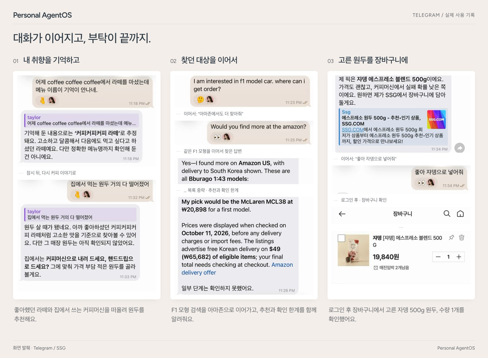

Still. Here with you.
조용히 곁에, 세심하게 함께.
AI는 바뀌어도, 나의 비서는 이어집니다.
내 컴퓨터에서 실행하는 오픈소스 개인 에이전트. 나에 대한 기억, 하던 일, 내가 허용한 범위를 유지하며 필요한 AI를 바꿔 쓸 수 있습니다.
제품 방향을 설명한 예시입니다. 실제 녹화나 자율 결제의 구현 증거가 아닙니다.
AI는 바꿔도, 비서는 그대로.
ChatGPT 구독으로 쓰는 Codex나 Claude 구독으로 쓰는 Claude Code가 일을 합니다. 대화 도중 명령 하나로 바꿔도 Still은 하던 대로 이어 갑니다.
원할 때 바뀌는 것
- Codex
- Claude Code
- API 키
- Ollama
- 도구와 연결
나와 함께 남는 것
- 나에 대해 알게 된 것
- 하던 일
- 내가 맡긴 권한
- 실제로 실행된 기록
길게 말하지 않아도, 기억합니다.
지난주에 한 말이 필요할 때 다시 쓰이고, 각 기억이 무엇에 근거하는지 알려 줍니다. 저장한 기억은 모두 되돌릴 수 있습니다.
월요일
고양이가 요즘 사료를 잘 안 먹어. 어떻게 하면 좋을까?
먼저 해 볼 만한 몇 가지예요… 고양이를 키우신다는 건 기억해 뒀어요.
목요일
50만 원 이하 로봇청소기 하나 골라 줘.
50만 원 이하로 세 개예요. 고양이 털을 제일 잘 처리하는 걸 맨 앞에 뒀어요.
실제 화면 보기

이미 대화하는 곳에서. 이미 쓰는 것과 함께.
대화하는 곳
- Telegram
- Slack
- 터미널
- Mattermost
- 브라우저
함께 쓰는 것
- 내 폴더
- Gmail
- Google 캘린더
- Google Drive
- 로그인한 사이트
폴더는 따로 말하지 않으면 읽기 전용입니다. Gmail 정리는 별도 권한이며, Still은 메일을 보내지 않습니다.
대화하는 동안 일하고, 내가 정한 곳에서 멈춥니다.
긴 일을 시작하기 전에 계획과 맡은 AI를 알려 줍니다. 그사이 다른 것을 묻거나 중간에 바로잡을 수 있습니다.
엄마 생일 선물, 5만 원 이하로 찾아 줘.
Codex매일 쓰실 만한 걸로 찾아볼게요. 후기와 배송일을 확인한 뒤 세 가지를 보여 드릴게요.
일본어로 고맙다는 말 어떻게 해?
“아리가토 고자이마스”예요. 선물은 계속 찾고 있어요.
- 연결한 것만. 고른 폴더·계정·도구만 씁니다.
- 결제는 나를 기다립니다. 장바구니에 담는 것과 결제는 별개이고, 결제할 때마다 내 승인이 필요합니다.
- 비밀번호는 밖에. 비밀번호와 토큰은 프롬프트·로그·실행 기록에 들어가지 않습니다.
오늘 밤, Still을 들여 보세요
Mac, Linux, Windows(WSL2) 컴퓨터와 이미 쓰고 있는 ChatGPT나 Claude 구독이면 충분합니다.
curl -LsSf https://raw.githubusercontent.com/Jongtae/Still/ebf97d4150be3eb867649a31e79287f05db02886/scripts/install.sh | sh설치 스크립트는 주소에 특정 버전으로 고정되어 있습니다. 실행하기 전에 스크립트 내용을 확인하세요. Apple Silicon Mac에서 Homebrew를 쓴다면 brew tap jongtae/still https://github.com/Jongtae/Still, brew install jongtae/still/agentos로 설치한 뒤 agentos start로 시작합니다. Windows에서는 PowerShell에서 wsl --install을 실행하고 다시 시작한 뒤, Ubuntu를 열고 위 명령을 붙여 넣으세요.
-
AI 고르기
설정은 터미널에서 진행됩니다. Codex, Claude Code, API 키 중에서 고르세요. 이미 로그인한 것이 미리 선택되어 있고, Still은 그 로그인 정보를 보지 않습니다.
-
인사하기
그 터미널에서 바로 Still과 대화하거나,
127.0.0.1:8787의 Still 화면에서 대화하세요. -
휴대폰으로 데려가기
“Telegram 연결해 줘”라고 말하고, @BotFather가 준 토큰을 붙여 넣은 뒤 페어링 링크에서 시작을 누르세요.
원하면 대화방도 Still 분위기로 꾸며 보세요. 배경화면(Still 모습 또는 단색)을 내려받은 뒤, Telegram 대화방 메뉴 → 배경화면 변경에서 사진으로 고르면 됩니다.


나머지는 빠른 시작 안내에 있습니다.
Engineering — 왜 이렇게 설계했을까요?
기술 철학, Ontology & Context, Decision Model, Presence, 모델 독립성, Owner Authority, Research & Evidence를 읽어보세요. 각 주제에서 구현·증거·남은 설계 과제를 원문으로 연결합니다.
코드도, 만드는 과정도 열려 있습니다.
Still은 AGPL-3.0 오픈소스입니다. 지금 되는 것과 아직 다듬는 중인 것은 제품 현황에 정리해 두었습니다. 현재 버전은 v0.3.0입니다.
GitHub에서 보기Discussions에서 이야기 나누기
Still이 도움이 됐다면 GitHub에서 Star를 눌러 주세요. 다음 사람이 Still을 찾는 데 도움이 됩니다.